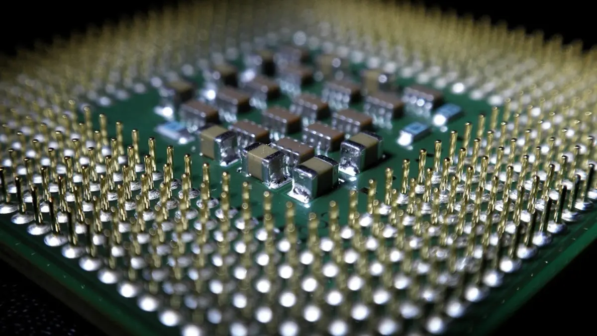

A la hora de comprar una CPU, es importante fijarse en sus características técnicas. Desde un principio, es bastante posible que todo te suene a “chino” debido a que es una nomenclatura con tecnicismos bastante complejos. De todas formas, aquí os dejamos un breve resumen para que podáis hacer una compra más objetiva:
✸ Frecuencia de reloj. Este primer término hace referencia a la velocidad de reloj que hay dentro del propio procesador. Es un valor que se mide en Mhz o Ghz y es básicamente la cantidad de potencia que alberga la CPU. La mayoría de ellas cuentan con una frecuencia base (para tareas básicas) y otra turbo que se utiliza para procesos más exigentes (para gaming, por ejemplo).
✸ Consumo energético. Es normal que nos encontremos con CPU 's donde su consumo energético varíe notablemente. Es un valor que se muestra en vatios (W) y como es obvio, aquellos procesadores de gama superior, serán más propensos a consumir más energía. Ante esto, es importante también contar con una fuente de alimentación acorde a la potencia de nuestro procesador y tarjeta gráfica.
✸ Número de núcleos. Con el avance de la tecnología, ya es posible encontrar tanto procesadores de Intel como de AMD que cuentan desde 2 hasta 64 núcleos. Estos cores son los encargados de llevar a cabo multitud de tareas de manera simultánea sin que el PC tenga que trabajar a “marchas forzadas”. Aquí depende también mucho del uso que le vayáis a dar a vuestro ordenador. Si lo vais a usar únicamente para tareas de ofimática, con una CPU de uno o dos núcleos será más que suficiente. Aunque si ya queréis hacer streaming, jugar o llevar a cabo labores de edición de vídeos, necesitaréis al menos cuatro.
✸ Zócalo. Es el tipo de conector con pines o socket al que debéis conectar a vuestra placa base. Es muy importante que os fijéis en este término, ya que de lo contrario, podéis comprar sin querer una CPU que sea incompatible con vuestra motherboard. Por ejemplo, las últimas de Intel suelen tener el socket LGA 1200, mientras que las de AMD con Ryzen son AM4.
✸ Número de hilos. Dentro de cada núcleo puede existir un hilo o core virtual, que tienen como objetivo llevar a cabo otros procesos más pesados sin que el rendimiento del PC o del portátil se vea afectado. Esta tecnología es lo que se conoce como “hyper-threading”, un término que acuñó Intel, pero que a día de hoy se usa indistintamente para cualquier marca.
✸ Memoria caché. A la hora de “recordar” cualquier tarea, el propio ordenador hace uso de la memoria RAM. Sin embargo, a veces esto no es del todo suficiente y por tanto es necesario que utilice la memoria caché de la propia CPU. Se caracteriza porque se llega a ella de forma más rápida y puede ser tipo L1, L2 y L3.
